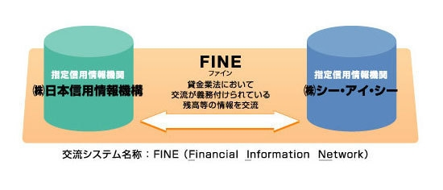

JICCについて
指定信用情報機関制度とは？
平成１８年に改正された貸金業法では、貸金業者が個人の顧客等に貸付等を行おうとする場合には、過剰貸付を防止するために、指定信用情報機関の信用情報を利用し顧客の総借入残高を把握して返済能力調査を行うことを義務付けています。
指定信用情報機関とは、貸金業法で定められた一定の要件を満たし、貸金業法における信用情報提供等業務を行う者として内閣総理大臣の指定を受けた信用情報機関のことをいいます。
ＪＩＣＣは、平成２２年３月１１日に貸金業法に基づく指定信用情報機関として内閣総理大臣から指定を受けました。（金融庁のホームページにリンクします）
指定信用情報機関に求められる一定の要件
指定信用情報機関には、業務を適正かつ安全的に行うことが求められており、保有する信用情報の規模や財産的基礎要件に一定以上の要件を備えていることが義務付けられています。
＜指定要件（一部抜粋）＞
- （１）法人であること。
- （２）貸金業法、個人情報の保護に関する法律などに違反し、罰金の刑罰に処されていないこと。
- （３）役員が法令に違反し罰金の刑又は禁錮以上の刑に処されていないこと。
- （４）加入貸金業者の数が１００以上であること。
- （５）保有する個人信用情報に係る貸付けの残高の合計額が５兆円以上であること。
- （６）貸借対照表に計上された純資産の額が５億円以上であること。
- （７）人的構成に照らして、信用情報提供等業務を適正かつ確実に遂行することができる知識および経験を有し、かつ、十分な社会的信頼を有すると認められること。
指定信用情報機関に求められる態勢
指定信用情報機関には、社会的インフラとしての役割を果たすことが期待されており、経営管理態勢、信用情報の正確性の確保、信用情報の安全管理などの態勢を確保していることが求められています。
経営管理等
- １．経営管理
- 取締役会、監査役会といった組織が経営をチェックできていること。
内部監査部門が健全に機能していること。 - ２．人的構成
- 信用情報提供等業務の健全かつ適切な運営に必要な関係法令などに関する知識や業務に関する知識・経験を有していること。
業務の適正性
- １．反社会的勢力による被害の防止
- 反社会的勢力との関係遮断に向けた態勢整備に取り組んでいること。
内部監査部門が健全に機能していること。 - ２．役員の兼務の制限
- 指定信用情報機関の代表者および常務に従事する役員が、貸金業者などの代表者になっていないこと。
内閣総理大臣（金融庁長官）の許可を受けた場合のみ兼職が可能。 - ３．兼業の制限
- 信用情報提供等業務および信用情報提供等業務に付随する業務を除き、他の業務を行っていないこと。
内閣総理大臣（金融庁長官）の承認を受けた場合のみ兼職が可能。 - ４．信用情報提供等業務の委託
- 信用情報提供等業務の一部を、他の者に委託する場合は、内閣総理大臣（金融庁長官）の承認を受けること。
- ５．差別的取扱いの禁止
- 貸金業者が信用情報提供等業務の締結（加入）を希望する場合には、正当な理由なくこれを拒否してはならない。
また、特定の加入貸金業者に対し不当な差別的取り扱いをしてはならない。 - ６．システムリスク管理
- コンピュータシステムのダウン又は誤作動などのシステムの不備、コンピュータが不正に使用されることなどにより加入貸金業者や指定信用情報機関が損失を被るリスクが適切に管理されていること。
業務規程関係
- １．信用情報提供契約の締結
- 貸金業者との信用情報の提供を内容とする契約は、資金需要者などからの同意の取得、目的外使用を禁止、安全管理措置の実施など、貸金業法、個人情報保護法、実務指針その他関連法令などを遵守する内容となっていること。
- ２．信用情報の収集・提供および他の信用情報機関との連携
- 「貸金業者向けの総合的な監督指針」の規定を踏まえつつ、信用情報の収集・提供を適切に実施することが出来るようシステム上の態勢整備を図り、指定信用情報機関の間における情報の提供が円滑に行われるよう、所要のシステム対応が完了していること。
- ３．信用情報の安全管理
- 信用情報の漏洩、滅失又はき損の防止その他の信用情報の安全管理については、個人情報保護法、金融分野ガイドラインおよび実務指針の規定を踏まえ、適切な措置が講じられていること。
- ４．信用情報の正確性
-
- ・貸金業者から提供された信用情報を正確かつ最新の内容に保つための態勢が整備されていること。
- ・貸金業者から提供された本人特定情報に変更が生じた場合であっても指定信用情報機関において、適切に名寄せを行うための措置が講じられていること。
- ・個人情報保護法第２９条の規定に基づく訂正等を適正かつ確実に行うための態勢が整備されていること。
- ５．加入貸金業者の監督
-
- ・指定信用情報機関は、信用情報提供契約の締結を希望する貸金業者の審査時に、特に、信用情報の安全管理措置について、厳格なチェックを行うこと。
- ・加入貸金業者が指定信用情報機関から提供を受けた信用情報を資金需要者等の返済能力調査以外の目的で使用しないよう、加入貸金業者に対する必要かつ適切な監督を行うこと。
- ６．苦情処理
- 指定信用情報機関は、個人情報保護法第３５条や金融分野ガイドライン第１６条の規定に基づき、信用情報の取り扱いに関する苦情を受けたときは、その内容について調査し、合理的な期間内に適切かつ迅速な処理を行うよう努めること。
指定信用情報機関に登録される情報
貸金業者は、指定信用情報機関と信用情報提供契約を締結したときには、次に掲げる事項を指定信用情報機関に提供することが義務付けられています。
個人信用情報
個人信用情報とは、個人の顧客を相手方とする貸付けに係る契約で貸付けの残高があるものに係る次に掲げる情報。
＜本人特定要件＞
- １．氏名（ふりがなを付す。）
- ２．住所
- ３．生年月日
- ４．電話番号
- ５．勤務先の商号又は名称
- ６．運転免許証の番号
- ７．本人確認書類に記載されている本人を特定するに足りる記号番号
※配偶者貸付けを締結している場合には、配偶者に係る１～７の情報
＜契約内容等＞
- １．契約年月日
- ２．貸付けの金額
- ３．貸付けの残高
- ４．元本又は利息の支払の遅延の有無
- ５．総量規制の除外・例外の識別
特定情報
特定情報とは、新規貸付審査における会員会社からの信用情報の照会状況に係る次に掲げる情報。
- １．カナ氏名
- ２．生年月日
- ３．電話番号
- ４．照会時間
- ５．照会対象区分（本人／配偶者）
- ６．例外／除外区分
指定信用情報機関の情報交流
複数の信用情報機関が指定信用情報機関として指定を受けた場合には、相互に残高情報などの交流が義務付けられています。
指定信用情報機関
- ・株式会社日本信用情報機構（当社）
- ・株式会社シー・アイ・シー
情報交流の概要

交流される情報の内容
- １．個人信用情報
- 個人の顧客を相手方とする貸付けに係る契約で貸付けの残高があるものに係る情報。
個人信用情報に関する詳しい内容はこちらより。 - ２．特定情報
- 新規貸付審査における会員会社からの信用情報の照会状況に係る情報。
特定情報に関する詳しい内容はこちらより。 - ３．重複加盟を識別するための情報
- 貸金業者が複数の指定信用情報機関に加入している場合には、同一の信用情報が複数の指定信用情報機関に登録されます。
複数の指定信用情報機関に対して信用情報の照会が行われた場合、照会結果に重複した内容が含まれるため、その重複している内容を識別するための情報。 - ４．調査中の注記
- お客様ご本人から、本人特定要件および契約内容などに調査依頼があり、現在調査中であることを表す情報。
- ５．本人申告コメントの一部
- お客様ご本人から申し出があり、信用情報機関に登録したコメント情報のうち、同姓同名の別人がいることを表す情報。
![[アイコン]信用情報機関とは](../../../images/about/img01_cntarea02.png)
![[アイコン]加盟会員について](../../../images/about/img02_cntarea02.png)
![[アイコン]会社概要](../../../images/about/img03_cntarea02.png)
![[アイコン]アクセスマップ](../../../images/about/img04_cntarea02.png)
![[アイコン]統計情報](../../../images/about/img05_cntarea02.png)
![[アイコン]コーポレートガバナンス](../../../images/about/img06_cntarea02.png)